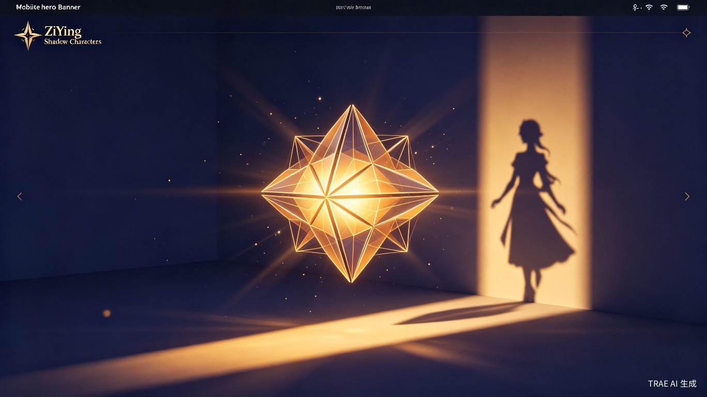
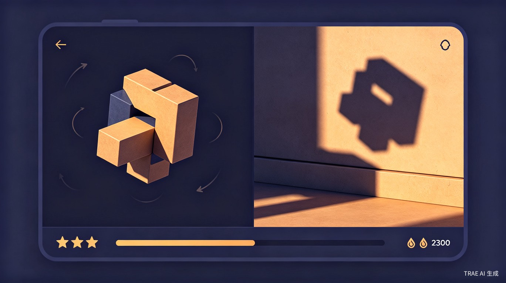
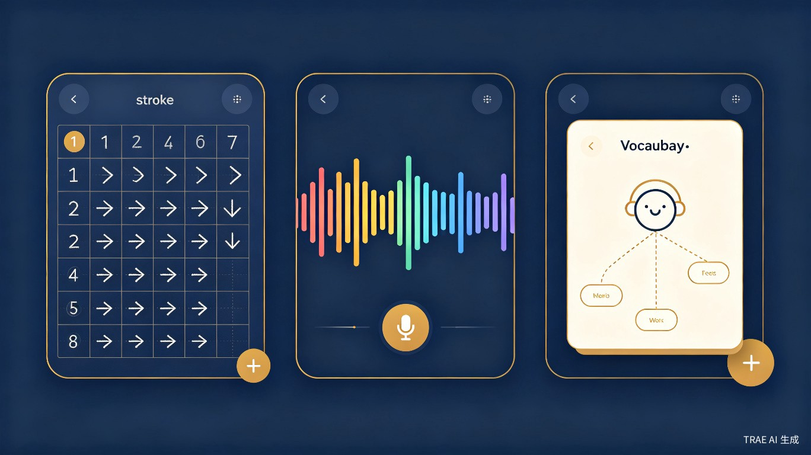
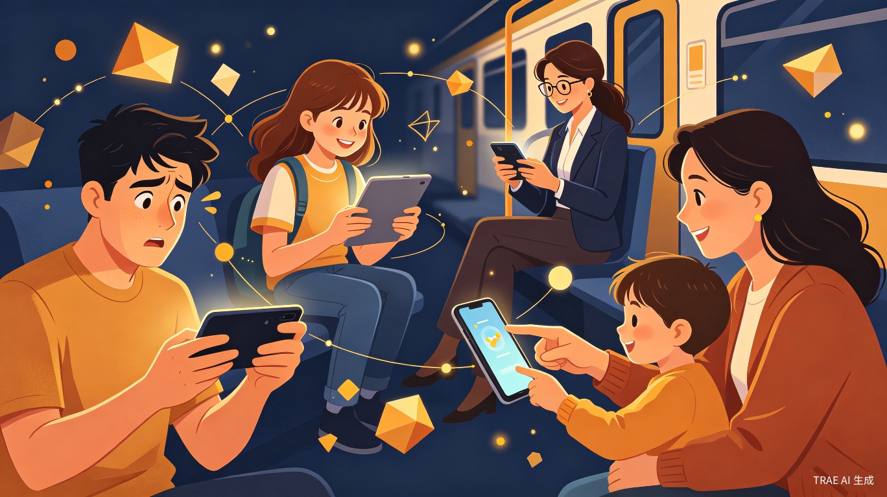

旋转光影，解锁汉字 — 一款用游戏驱动的汉字学习App
旋转3D物体，让投影在墙面上呈现汉字轮廓。从简单独体字到复杂合体字，难度层层递进
逐笔动画演示书写轨迹，配合笔顺口诀，在解谜建立的空间直觉基础上深化笔画认知
四声发音对比，可视化声波波形+跟读评分，用多感官关联攻克声调难关
以核心汉字为节点的常用词汇，含例句和场景图，建立语义关联网络
解谜赚取墨点，兑换学习模块，游戏成就与学习进度双向驱动
限时连续解谜模式，考验熟练度和反应速度，赚取墨点的主要途径

每关一个目标汉字，屏幕左侧展示一个不规则的3D立体物体，右侧是一面虚拟墙壁。用户通过手指滑动旋转物体，调整角度和方向，使投射在墙面上的影子逐渐显现出目标汉字的轮廓。
系统给出目标汉字及其拼音作为提示，展示笔画数作为辅助信息
手指滑动旋转3D物体，从不同角度观察墙面上的投影变化
投影与目标汉字轮廓重合度达到阈值，触发成功动画，获得墨点奖励
完成关卡
游戏奖励
笔画/音调/词汇
解锁新关卡
逐笔动画演示，配合书写轨迹和笔顺口诀
四声发音对比，可视化波形+跟读评分
核心汉字的常用词汇，含例句和场景图

| 用户群体 | 典型特征 | 核心诉求 |
|---|---|---|
| 海外中文学习者 | 欧美、日韩、东南亚等地区的外国人，年龄18-40岁 | 希望用轻松有趣的方式入门汉字，而非枯燥的抄写和背诵 |
| 华裔青少年 | 二代、三代移民，有一定家庭中文环境但系统学习不足 | 通过游戏化方式重建对汉字的兴趣，补足读写短板 |
| 零基础成人 | 因工作、留学、旅行需要学习中文的成人 | 碎片时间高效学习，拒绝"学生式"的刻板教学 |
| 汉字兴趣爱好者 | 对书法、设计、东亚文化感兴趣的人群 | 从结构美学的角度理解汉字，满足审美和知识双重需求 |
| 亲子用户 | 5-12岁儿童及其家长 | 寓教于乐，让孩子在游戏中自然接触汉字 |

通勤/排队等碎片时间：快速完成1-2个光影解谜关卡，赚取墨点；睡前放松时刻：用积攒的墨点兑换一节笔画动画课或音调练习；周末深度学习：连续挑战高难度解谜关卡，解锁词汇拓展包；亲子互动时光：家长与孩子合作解谜，共同探索汉字的结构奥秘。
开辟"游戏化汉字学习"新赛道，以Shadowmatic式光影解谜作为差异化核心玩法，具备天然社交传播属性，有望以极低获客成本实现用户增长。
双轨驱动让游戏成就直接转化为学习资源，光影解谜通过空间操作强化结构记忆，音调练习通过可视化波形建立多感官关联，预期入门学习时间缩短40%以上。
降低汉字学习门槛和心理壁垒，让更多海外用户以轻松方式接触汉字文化，实现润物细无声的文化传播。
| 维度 | 传统汉字学习App | 字影 |
|---|---|---|
| 核心驱动 | 任务打卡、进度条 | 光影解谜游戏、墨点经济系统 |
| 学习方式 | 被动观看、机械重复 | 主动探索、空间操作 |
| 笔画教学 | 静态图示、文字说明 | 解谜中建立空间直觉 + 动画课深化 |
| 音调训练 | 音频播放、跟读按钮 | 可视化波形 + 游戏化评分 |
| 词汇学习 | 孤立字卡、死记硬背 | 语义网络 + 场景例句 + 游戏解锁 |
| 用户粘性 | 依赖自律和外部督促 | 游戏成就感驱动、经济系统激励 |
汉字的学习不该是一场苦行，而应该是一次充满惊喜的探索。字影将每一个汉字变成一道光影谜题——当你旋转那个抽象的3D物体，看着墙上的影子从混沌中逐渐清晰，最终呈现出一个完整的汉字时，你不仅"看到"了这个字，更"理解"了它的结构之美。
玩光影解谜，赚墨点，学笔画、练音调、拓词汇——在字影的世界里，学习从来不是负担，而是通关路上的自然收获。